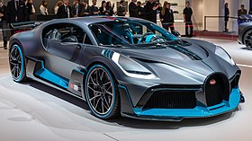

The Bugatti Divo is a mid-engine track-focused sports car developed and manufactured by Bugatti Automobiles S.A.S. The car is named after French racing driver Albert Divo, who raced for Bugatti in the 1920s winning the Targa Florio race twice. It was revealed on 24 August 2018 at “The Quail – A Motorsports Gathering“ in California, United States.
The car takes inspiration from the Bugatti Type 57SC Atlantic along with the Bugatti Vision Gran Turismo concept in terms of design and has track performance as its main focus. The car includes a redesigned exhaust system featuring quad exhaust pipes, a 1.8 metre wide fixed rear wing (23% wider than the retractable wing on the Chiron), a NACA duct on the roof that channels air to the rear of the car on a central fin and ultimately on the rear wing for improved downforce, a large front chin spoiler, more refined side skirts, larger air intakes on the front, new head lamps and tail lamps, a vent in the bonnet for improved radiator cooling and vents on the front wheel arches to cool the brakes.
The interior in the Divo is relatively similar to the more luxurious Chiron, but has Alcantara upholstery and carbon-fibre trim in order to save weight.
Other notable changes include stiffer springs and dampers, carbon-fibre wiper blades and intercooler shroud, grooved wheel spokes, reduced sound insulation, a lighter sound system and removal of the storage lockers present in the doors and centre console for a weight saving of 35 kg (77 lb) over the Chiron Sport. The engine, a quad-turbocharged W16 unit, is retained from the Chiron along with the 7-speed dual-clutch transmission.
The car is 8.0 seconds quicker than the Chiron around the Nardò test track according to the manufacturer and generates 456 kg (1,005 lb) of downforce at top speed, 90 kg (198 lb) more than the Chiron. The top speed is, however, reduced to 380 km/h (236 mph), owing to the extra drag produced by the aerodynamic elements and due to excessive pressure on the tyres resulting from a lower ride height. Power output is unchanged from the Chiron, with 1,103 kW (1,500 PS; 1,479 hp) at 6,700 rpm and 1,600 N⋅m (1,180 lb⋅ft) of torque at from 2,000 to 6,000 rpm. Acceleration from 0–100 km/h (0–62 mph) is also unchanged from the Chiron at 2.4 seconds but the Divo has a higher lateral acceleration (1.6 g vs 1.5 g in the Chiron). The Divo lacks the top speed mode unlocked with a special key as present on the Chiron.
There is nothing to say about such a beautiful car, definitely a dream car with such a price tag.